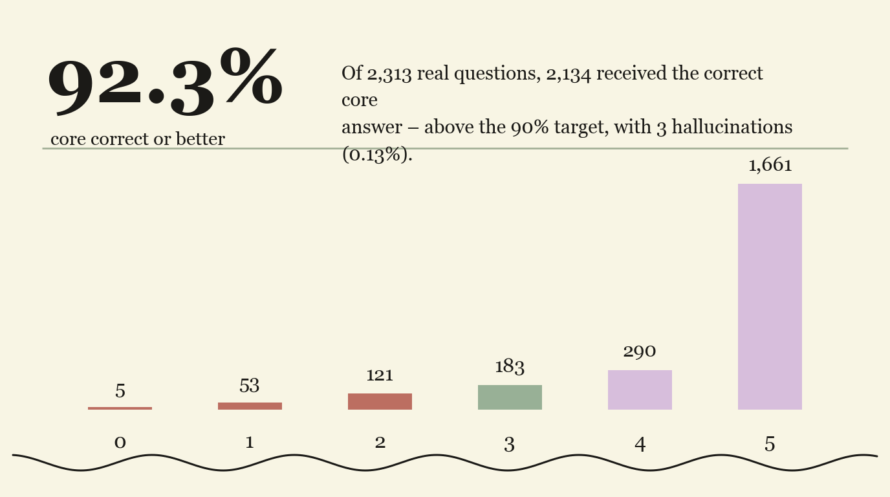

The full picture — every workstream on a single calendar, with a clearly defined end. Replace this lead paragraph with the one-sentence thesis of the document.
This document is commercial-in-confidence and prepared solely for Ramco Systems.
The engagement with Ramco began on 22 June 2026. It spans several workstreams that run partly in parallel. Body copy is 11px Helvetica Neue in #404247, with bold call-outs in near-black for the words that carry the argument.
Seen one workstream at a time, it can look like cost keeps being added. This paragraph exists to show the opposite: the whole thing at once, bounded, with an end.
One calendar, all workstreams. • = milestone / launch.
| Workstream | Jun | Jul | Aug | Sep | Oct | Nov | Dec | '27 |
|---|---|---|---|---|---|---|---|---|
| Phase 1 — Brain | ||||||||
| Chia — engine (M1–M5) | ||||||||
| Chia — LAUNCH | ||||||||
| Data migration (future) |
Committed · optional · future — with windows.
| Workstream | Scope | Window | Status |
|---|---|---|---|
| Committed | |||
| Phase 1 — The Brain | Build & validate the Brain across the ERP suite of milestones. | 22 Jun – 22 Aug 2026 | In progress |
| Chia engine (M1–M5) | The conversational journey-execution chatbot — context, memory, tools, services, inference. | 22 Jun – 1st wk Sep 2026 | M1 done · M2 ~50% |
| Optional — decide whether to go | |||
| Screen modernization | Build v1 modern UI generator out of the Brain; hand the architecture to Ramco's Brain team. | Jul – Aug 2026 | Optional |
| Future — to be decided | |||
| Data migration engine | New project — scoped when it begins. | starts ~Jan 2027 | To be decided |
Five milestones — the first complete, the second underway.
| # | Milestone | Theme | Est. | Status |
|---|---|---|---|---|
| M1 | Chia Foundations | Context-engineering + memory architecture + tools/services via gRPC. | — | Done |
| M2 | The Chatbot — Single Journey | Build the conversational chatbot that runs one journey end-to-end. | 1 wk | ~50% |
| M3 | Composite & Dynamic Journeys | Extend the chatbot to run composite + dynamic journeys. | 1 wk | Planned |
| M6 | Customer Overlay | Adapt the shared Brain per customer (rule + knowledge overlays). | TBD | To be decided |
Appendices reuse every component above. Inline code looks like
pocrmn_ser_crt and monospace lines use Menlo.
